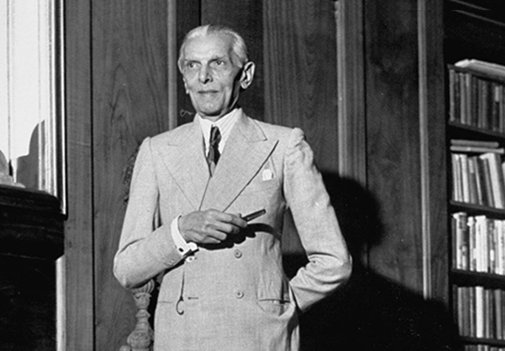
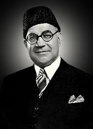
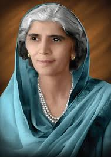

Welcome To Pakistan
Pakistan is a South Asian country bordered by India, Afghanistan, Iran, and China, with a coastline along the Arabian Sea. Established in 1947 as a result of the partition of British India, it was created to provide a homeland for Muslims in the region. The country has a diverse landscape, ranging from the mountainous north, including part of the Himalayas and the Karakoram range, to the vast plains of the Punjab and Sindh. Islamabad is its capital, while Karachi is its largest city. Pakistan has a rich cultural heritage, with influences from its Islamic history, ancient civilizations like the Indus Valley, and diverse ethnic groups. It plays a strategic role in global geopolitics and faces challenges such as economic development, political stability, and security concerns.

Quaid Azam
Quaid-e-Azam Muhammad Ali Jinnah was the founder of Pakistan and a visionary leader who led the movement for an independent Muslim state in South Asia. As the leader of the All-India Muslim League, Jinnah played a crucial role in securing the creation of Pakistan in 1947. Known for his determination, leadership, and commitment to the rights of Muslims, Jinnah is revered as the "Father of the Nation." His principles of unity, faith, and discipline continue to inspire Pakistanis today.

Alama Iqbal
Allama Iqbal, a prominent philosopher, poet, and politician in British India, is celebrated as the "Spiritual Father of Pakistan." Born in 1877, he played a crucial role in inspiring the idea of a separate Muslim state through his powerful poetry, which emphasized self-discovery, cultural revival, and spiritual awakening. His works, such as "Shikwa" and "Jawab-e-Shikwa," reflect a deep yearning for unity and empowerment among Muslims, making him an enduring figure in South Asian literature and nationalism.

Liaquat Ali Khan was a key figure in the early history of Pakistan, serving as its first Prime Minister from 1947 until his assassination in 1951. Born in 1895, he played a vital role in the Pakistan Movement alongside Muhammad Ali Jinnah. A trained lawyer and politician, Liaquat focused on nation-building, emphasizing economic development, education, and social reforms. His policies aimed to establish a democratic framework and promote unity among diverse ethnic groups in Pakistan. Despite his brief tenure, his leadership laid the foundation for the newly independent state.

Fatima Jinnah, born in 1893, was a prominent Pakistani dental surgeon and a leading figure in the struggle for Pakistan's independence. As the younger sister of Muhammad Ali Jinnah, the founder of Pakistan, she played a crucial role in the Pakistan Movement, advocating for women's rights and social justice. After the creation of Pakistan in 1947, Fatima became actively involved in politics, joining the All-India Muslim League and later co-founding the Women’s Muslim League. She was a fierce advocate for democracy and civil rights, and in 1965, she ran for president as a candidate of the opposition. Fatima Jinnah remains a symbol of resilience and empowerment for women in Pakistan.

Chaudhry Rahmat Ali was a significant figure in the Pakistan Movement, best known for coining the term "Pakistan" in 1933. Born in 1897 in what is now India, he was an influential student leader and activist who advocated for the rights of Muslims in British India. In his pamphlet, "Now or Never," he emphasized the need for a separate nation for Muslims, outlining the regions that would constitute Pakistan: Punjab, Afghania (North-West Frontier Province), Kashmir, Sindh, and Balochistan. His ideas laid the groundwork for the eventual demand for a separate Muslim state. Despite his contributions, he faced challenges and spent much of his later life in exile. Rahmat Ali's vision continues to be recognized as pivotal in the creation of Pakistan.

Sardar Abdur Rab Nishtar was a prominent Pakistani politician and a key figure in the early years of Pakistan's formation. Born in 1899 in the Punjab region, he was a dedicated member of the All-India Muslim League and played a significant role in the Pakistan Movement. After the establishment of Pakistan in 1947, Nishtar served in various important positions, including as the Governor of West Pakistan. He was also involved in the formulation of policies aimed at national integration and development. Known for his commitment to public service, Nishtar advocated for education and economic progress in the newly formed state. His contributions to Pakistans political landscape remain noteworthy, reflecting his dedication to the countrys growth and unity.